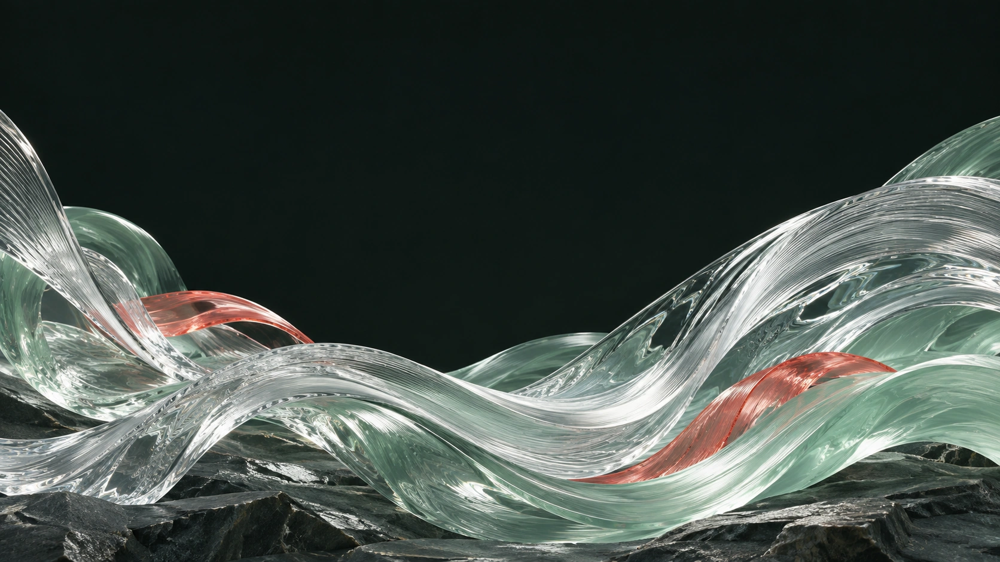

RiDEx
Explore what matters.
Reward-Informed Directional Exploration
for Diffusion Reinforcement Learning
1University of Science and Technology of China2Li Auto Inc.3Huazhong University of Science and Technology4Tongyi Lab5Xi'an High-tech Research Institute
† Corresponding authors
01 / Abstract
Abstract
Reward-based diffusion post-training relies on diverse samples, but not every change is relevant to the target reward. RiDEx concentrates local exploration in reward-relevant subspaces of the denoising velocity field. Conditional residuals or differentiable reward gradients propose directions; equal-and-opposite perturbations at the same generation state measure their terminal reward response. The resulting signed contrast supervises the explored velocity coordinates, while all generated images contribute to global DiffusionNFT learning. We evaluate alignment and preference objectives on Stable Diffusion 3.5 Medium.
02 / Training
Better rewards. Less compute.

03 / Generations
a photo of five apples
More generations
Citation
@misc{yan2026ridex,
title={RiDEx: Reward-Informed Directional Exploration
for Diffusion Reinforcement Learning},
author={Yan, Song and Wang, Chenfeng and Zhai, Wei and
Wang, Xingchen and Zhang, Tao and Shao, Yawen and
Pan, Shi and Li, Min and Zha, Zheng-Jun},
year={2026},
note={Preprint}
}